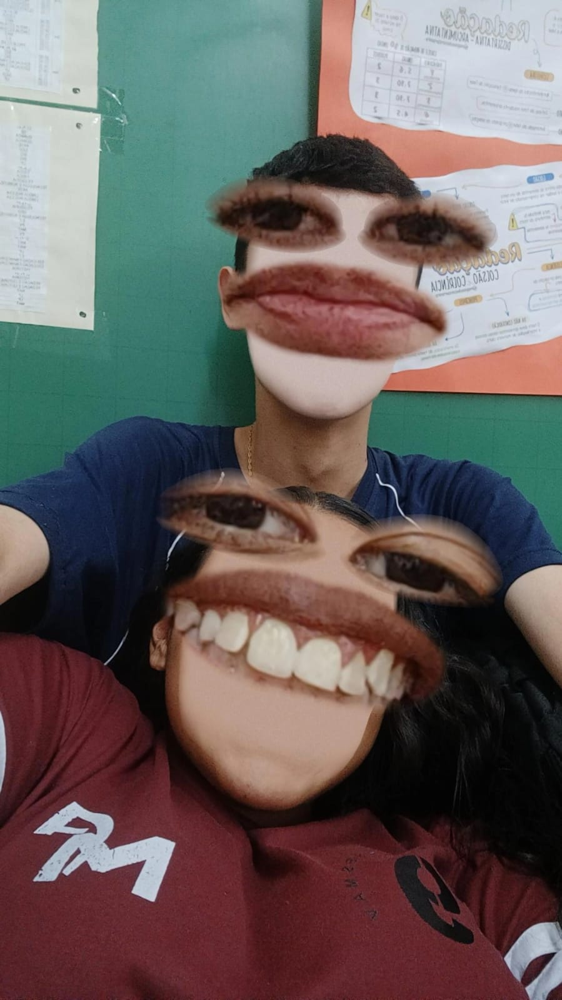
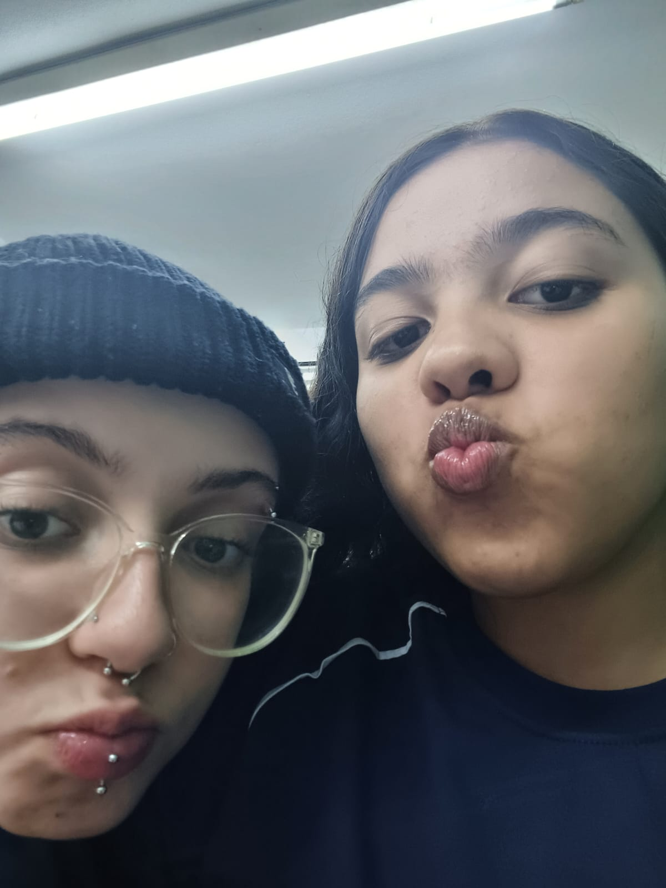
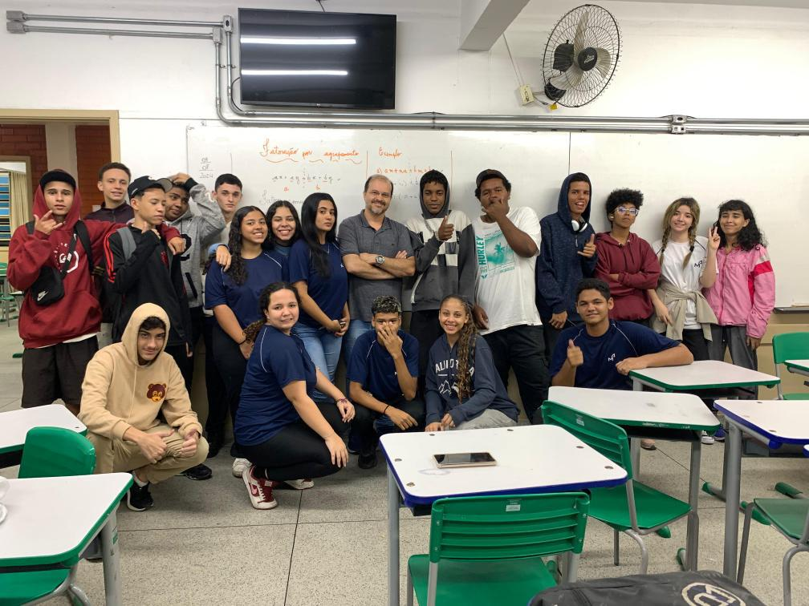
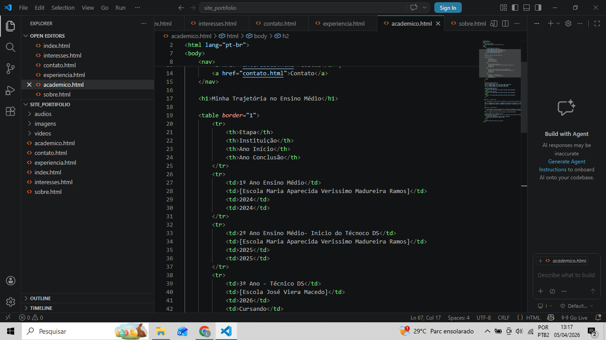

| Etapa | Instituição | Ano Início | Ano Conclusão |
|---|---|---|---|
| 1º Ano Ensino Médio | Escola Maria Aparecida Verissimo Madureira Ramos | 2024 | 2024 |
| 2º Ano Ensino Médio- Inicio do Técnoco DS | Escola Maria Aparecida Verissimo Madureira Ramos | 2025 | 2025 |
| 3º Ano - Técnico DS | Escola José Viera Macedo | 2026 | Cursando |
Fotos do primeiro ano:



Vídeos do primeiro ano:
Resumo: Durante o segundo ano, eu fiquei muito ficada nas aulas de Lógica e programação por isso, guardei alguns registos visuais.
Resumo: Atualmente estou em uma escola nova, José vieira Macedo e estou dando continuidade ao curso de Desenvolvimento de Sistemas. Estou a aprender Programação Mobile e a criar o meu primeiro portfólio em HTML puro.
